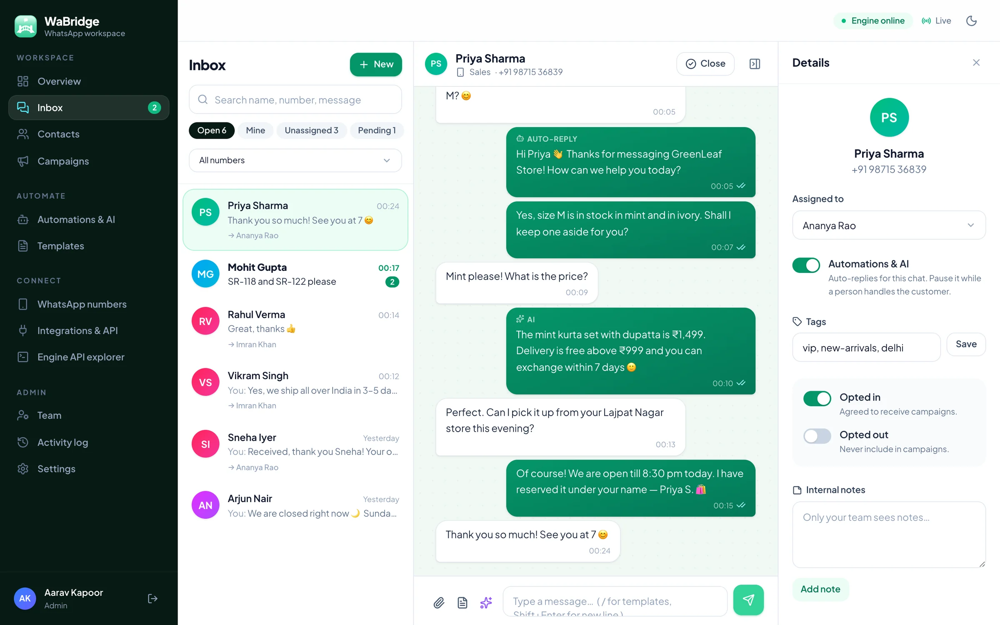
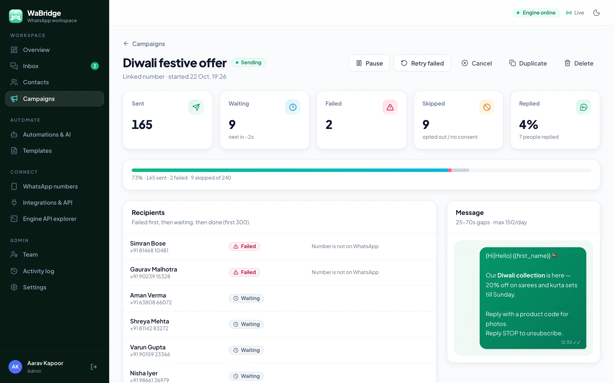

Team inbox
Live chats from all your numbers, assignment, open/pending/closed views, internal notes and one-tap templates.
WaBridge links your business number by QR code and gives your team a shared inbox, a simple CRM, safe broadcast campaigns, keyword auto-replies and an AI assistant — all running on your own laptop or server.
No more passing one phone around the counter. Every message from every linked number lands in one live inbox — assign chats, leave notes, reply with saved templates and see when customers read your message.

Built around how small teams actually sell and support on WhatsApp in India — quick replies, festive offers, order updates and a lot of “price kitna hai?”.
Live chats from all your numbers, assignment, open/pending/closed views, internal notes and one-tap templates.
Import a CSV from Excel or Google Sheets, tag customers, and track who opted in — or out — automatically.
Personalised broadcasts sent one by one with random gaps, daily caps and quiet hours, so offers reach people without spam patterns.
Welcome, away and keyword rules — “price”, “rate”, “kitna” — with cooldowns, priorities and a simulator to test them safely.
Write your prices, timings and policies once. The assistant answers from that knowledge and hands over to a person when asked.
Send order updates from your website or CRM with one HTTP call, and get signed events back for every new message.
Unofficial automation always carries some risk, so WaBridge builds the careful habits in — instead of leaving them to memory.

Start Docker Desktop and double-click Start WaBridge.bat. Secrets are generated for you and the dashboard opens in your browser.
Open WhatsApp on the phone → Linked devices → Link a device, and scan the QR shown in WaBridge. Pairing codes work too.
Invite your team, add a welcome message and price auto-reply, import contacts and send your first paced campaign.
Catalogue questions, order confirmations and pick-up times in one place.
Batch timings, demo-class bookings and fee reminders for opted-in parents.
Instant replies to listing enquiries and site-visit slots, tagged by project.
Run separate numbers, teams and campaigns for each client on your own server.
| WaBridge | Typical hosted tool | |
|---|---|---|
| Where chats are stored | On your laptop or server | On the vendor's cloud |
| Charges per message | None for QR-linked numbers | Often per conversation or per message |
| What you need to start | A phone and a QR scan | Usually a Meta Business setup and approval |
| Official Cloud API | Optional, side by side | Often the only option |
| Your own integrations | REST API, signed webhooks, full engine access | Depends on the plan |
Hosted tools differ widely — check each provider's own terms. QR-linked numbers use unofficial automation; see the FAQ on risk.
No. A number is linked the same way WhatsApp Web is — by scanning a QR code from the phone. A Meta Business setup is only needed if you also want the optional official Cloud API channel.
Any unofficial automation carries some risk, and WaBridge says so plainly. Use a dedicated number, warm it up gradually, message only people who opted in and keep the built-in pacing on. For large marketing sends, use the official Cloud API channel.
Yes. On Windows 10 or 11 with Docker Desktop, a double-click script installs and starts everything. It also runs on macOS and Linux servers.
Yes. Each teammate gets their own login as an admin or agent. Chats can be assigned, and auto-replies pause on their own while a person is handling a customer.
Keyword rules match whatever words you add — “price”, “rate”, “kitna”, “daam”. The AI assistant replies in the language the customer writes in.
The AI is optional. It uses your own Anthropic API key, so you pay Anthropic directly for what you use, and you can cap replies per chat per hour.
Install WaBridge on your laptop today and link your first number in a minute.